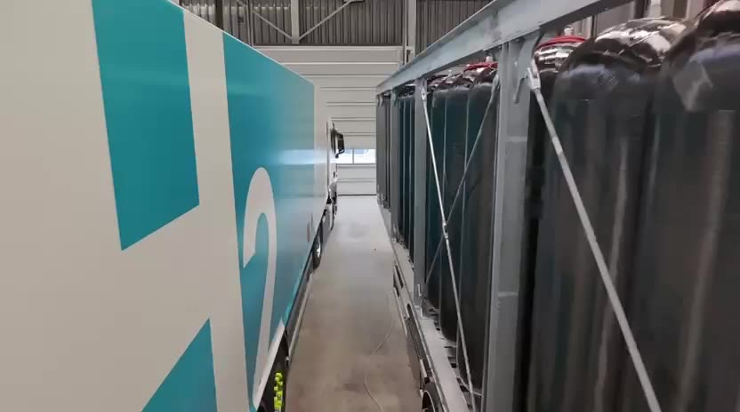
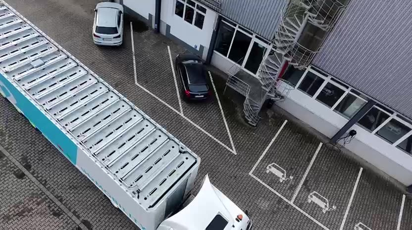
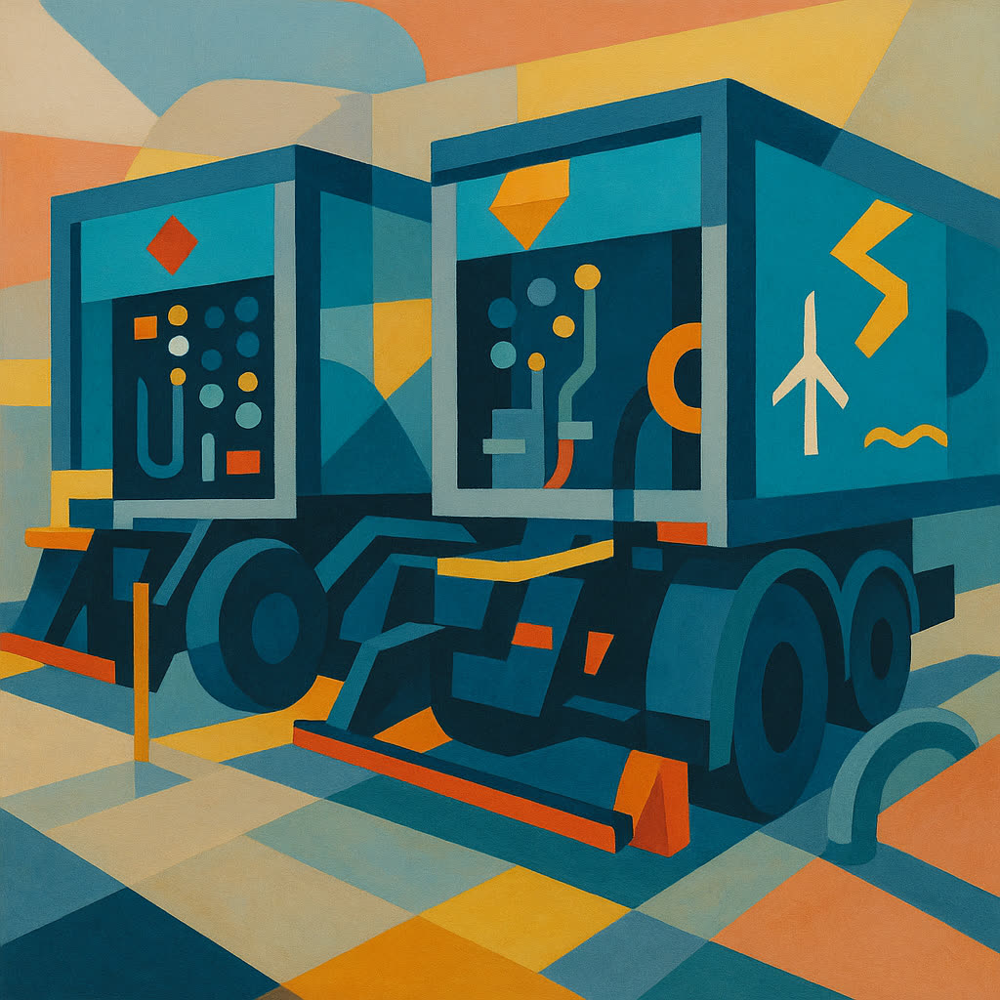
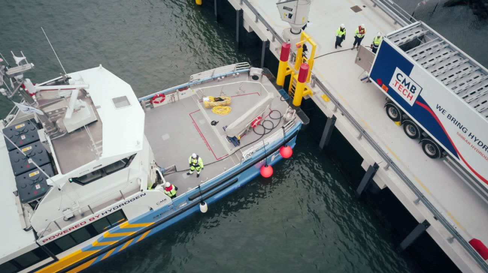

Druckgasflaschenbündel, Gasetrailer und Druckbehälterprüfung aus einer Hand — wir vereinen Engineering, Neubau und Prüfung unter einem Dach - zu Ihrem Vorteil.
Hervorgegangen aus dem Prüfwerk Kessels, vereint CyTec als Unternehmen die Bereiche Bündel-Herstellung, Design und Herstellung von Gastransportfahrzeuge - und Gasespeichern, sowie die Wiederholungsprüfung dieser und Einzelbehältern, unter einem Dach.
Industriegas-Unternehmen in ganz Europa vertrauen auf Lösungen, die genau auf ihre Anforderung gebaut sind — nicht auf Katalogware.
Drei Kompetenzen, ein Verantwortlicher. Kein Schnittstellenrisiko, keine Ausreden — vom ersten Engineering-Entwurf bis zur wiederkehrenden Prüfung.
Eigene zugelassene Baumuster für Bündel und MEGC/Batteriefahrzeuge. Engineering nach PED/TPED — auch für Sonderlösungen, die Konzerne nicht anfassen.
Hochdruckflaschenbündel mit 4–18+ Flaschen, vertikal und horizontal. Gasetrailer für den europaweiten Transport — gefertigt in Mönchengladbach.
Alle zugelassenen Prüfmethoden für Druckgasbehälter im eigenen Prüfwerk — inklusive zerstörungsfreier Prüfung (NDT) und dokumentierter Prüfhistorie.
Jedes CyTec-Bündel wird für den harten Dauereinsatz gebaut und geprüft — scrollen Sie weiter und bringen Sie das Manometer auf 1000 bar — unseren maximalen Auslegungsdruck nach PED.
Jede Leistung mit eigener Seite, technischen Daten und direktem Draht zu unseren Ingenieuren.

Eigene zugelassene Baumuster für 6–18+ Flaschen, vertikal und horizontal, bis 640 bar (TPED) / 1000 bar (PED) — für Industrie-, Medizin- und Spezialgase.
Zur Produktseite
Vielzahl an Baumustern für den Neubau von Gasetrailern — vertikal und horizontal, ADR/TPED-konform, auch als Sonderlösung.
Zur ProduktseiteAlle zugelassenen Prüfmethoden für Druckgasbehälter — wiederkehrende Prüfung, dokumentiert aus dem eigenen Prüfwerk.
Zur PrüfleistungUnsere Prüfabteilung entwickelt Lösungen für die zerstörungsfreie Prüfung (ZfP) — Ultraschall, Sichtprüfung, Schallemission.
Zur PrüfleistungHochdruckleitungssysteme nach Ihren Vorstellungen — entwickelt, gefertigt und geprüft für den sicheren Dauereinsatz.
Zur Produktseite
Vom Tube-Trailer über Bündel-Trailer bis zu modernsten Leichtbau-Composite-Behältern — Entwicklung nach Kundenanforderung.
Zur ProduktseiteFertigung, Prüfung und Einsatz unserer MEGC und Tube Trailer — vom Werksgelände in Mönchengladbach bis zur Green-Hydrogen-Bunkerung im Hafen.

Ratgeber, Prüffristen, Normen und Projektberichte — der wachsende Wissens-Hub für Einkäufer und technische Entscheider.
Die wichtigsten Intervalle und Pflichten für Betreiber von Flaschen, Bündeln und Trailern — kompakt erklärt.
Juli 2026 RatgeberWirtschaftlichkeit, Logistik und Sicherheit im Vergleich — mit Entscheidungsmatrix für Einkäufer.
Juli 2026 NewsSonderbau in Rekordzeit: vom Lastenheft zur Zulassung in unter sechs Monaten.
Juni 2026Beschreiben Sie uns Ihre Anforderung — Gasart, Druckstufe, Stückzahl. Sie erhalten innerhalb von 48 Stunden eine qualifizierte Rückmeldung unserer Ingenieure.
Angebot anfragen